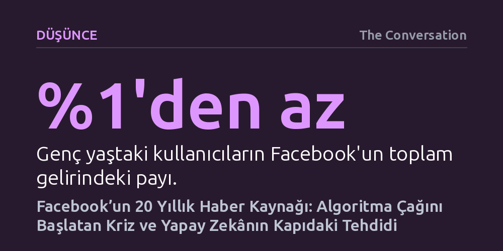

DUSUNCE · The Conversation · 2026-09-07
Facebook'un yirmi yıl önce büyüme krizini aşmak için devreye soktuğu Haber Kaynağı, insan dikkatini metalaştıran algoritmik çağı başlattı. Kurumlar bu algoritmaları henüz yeni sınırlayabilirken, sektör çok daha denetimsiz bir yapay zekâ evresine geçti.
Sosyal medyadaki bağımlılık ve kutuplaşmanın bir yan etki değil, şirketin duraklayan büyümesini kurtarmak için bilinçli tasarlanmış bir veri sömürüsü modeli olduğunu gösterir.

2006 yılında Facebook, kuruluşundan beri ilk kez ciddi bir tıkanıklıkla karşı karşıya kaldı. Şirket içi veriler, platforma yeni katılımların durma noktasına geldiğini ve mevcut kullanıcıların sitede geçirdiği sürenin artık artmadığını ortaya koyuyordu. O dönemki yapıda kullanıcılar, arkadaşlarının neler yaptığını öğrenebilmek için her bir profili tek tek ziyaret etmek zorundaydı; bu da platformu durağan bir fihristten farksız kılıyordu.
Mark Zuckerberg ve mühendis ekibi, bu durgunluğu aşmak adına 'Haber Kaynağı' (News Feed) sistemini geliştirdi. Yeni modelde kullanıcıların ana sayfası, algoritmaların seçtiği ve arkadaşlarının paylaştığı güncellemelerle otomatik olarak besleniyordu. Böylece internet kullanıcılarının bilgi aradığı pasif web modeli terk edildi ve içeriğin kullanıcıya itildiği algoritmik etkileşim çağı başlatıldı.
Fakat bu radikal adım ilk anda büyük bir öfke dalgası yarattı. Kullanıcılar bir gecede mahremiyetlerinin çiğnendiğini hissetti; örneğin ilişki durumundaki küçük bir değişikliğin bile bütün tanıdıklarına anında bildirilmesi isyana dönüştü. On binlerce kişi eski sisteme dönülmesi için gruplar kurdu, şirketin Palo Alto'daki merkezi önünde gösteriler yapıldı ve Facebook ilk defa özel güvenlik görevlileri tutmak zorunda kaldı. Zuckerberg yarım ağız bir özür dilese de geri adım atmadı; çünkü şirket içi göstergeler, protestolara rağmen sitede geçirilen toplam sürenin ve kullanıcı bağlılığının görülmemiş ölçüde fırladığını kanıtlıyordu.
Haber Kaynağı'nın devreye alınması, Facebook'un teknik altyapısını ve varoluş amacını tamamen değiştirdi. Platform, insanların yalnızca sosyal bağlarını sürdürdüğü statik bir iletişim alanı olmaktan çıkıp, devasa miktarda kullanıcı verisini toplayan, ayrıştıran ve ticarileştiren bir bilgi işleme mekanizmasına dönüştü.
Bu yeni mimariyle birlikte kullanıcı davranışları sayısallaştırıldı. Araştırmacılar Christina Alaimo ve Jannis Kallinikos'un belirttiği gibi kullanıcılar 'ayrık ve sayılabilir eylemler temelinde hesaplanabilen' nesnelere dönüştü. Her tıklama, sayfada geçirilen her saniye ve her etkileşim; kullanıcının ne tür içeriklerle sitede tutulabileceğini ve davranışlarının platform dışında nasıl yönlendirilebileceğini gösteren değerli birer ticari veriye evrildi.
Bu düzenin merkezine yerleştirilen EdgeRank algoritması, nelerin görünür olacağına karar verme gücünü bireyden alıp şirkete teslim etti. Sistem, yakın çevrenin sakin paylaşımlarından ziyade en çok etkileşim veya öfke uyandıran içerikleri sürekli önceliklendirecek şekilde optimize edildi. Bu durum kullanıcıların kendi iradelerinden daha fazla zamanı platformda tüketmelerine yol açarak algoritmik bağımlılığın temelini attı.
Facebook'un 2006'daki bu algoritmik hamlesi, sonraki yirmi yıl boyunca benzeri görülmemiş bir küresel büyümenin ve devasa bir kâr mekanizmasının yakıtı oldu. Ancak şirkete muazzam bir güç ve servet kazandıran bu model; bireysel zihinsel tahribat, bağımlılık ve toplumların kutuplaşması gibi derin sosyo-teknik sorunları da beraberinde getirdi.
Bugün ise demokratik kurumlar ve devletler, yirmi yıl önce filizlenen bu denetimsiz algoritmik sistemleri dizginlemek için somut adımlar atmaya çalışıyor. Avustralya'nın 16 yaş altındakilere sosyal medya yasağı getirmesi, İngiltere'nin benzer kısıtlamaları gündemine alması ve ABD mahkemelerinin Meta'yı çocukların erişimini sınırlamaya zorlaması bu mücadelenin en görünür halkalarıdır.
Her ne kadar genç kullanıcılar Facebook'un toplam gelirinin yüzde birinden daha azını oluştursa da bu hukuki davaların oluşturduğu emsaller büyük önem taşıyor. Alınan kararlar, teknoloji devlerinin büyüme uğruna kullanıcı dikkatini kontrolsüzce sömürdüğü dönemin hukuki sınırlarla kuşatılmaya başlandığını simgeliyor.
Ne var ki dünya artık 2006'daki ilk algoritmik dönemden çok daha farklı ve karmaşık bir dönemece girmiş bulunuyor. Meta gelirlerinin ezici çoğunluğunu hâlâ Instagram ve WhatsApp gibi sosyal ağlardan elde etse de şirketin geleceğe yönelik devasa yatırımları yeni gelir kapısının büyük dil modelleri ve yapay zekâ olacağını açıkça gösteriyor.
Buradaki asıl kritik soru, kamu otoritelerinin bu yeni teknolojik dalganın barındırdığı risklere karşı ne kadar hazırlıklı olduğudur. Haber Kaynağı'nın toplumsal dokuda açtığı yaraların fark edilip bunlara karşı yasal bariyerlerin kurulabilmesi tam yirmi yıl aldı. Gelişimi çok daha hızlı ve etkisi çok daha derin olan yapay zekâ karşısında aynı gecikmenin tekrarlanması, telafisi imkânsız sonuçlar doğurabilir.